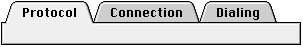
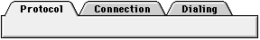
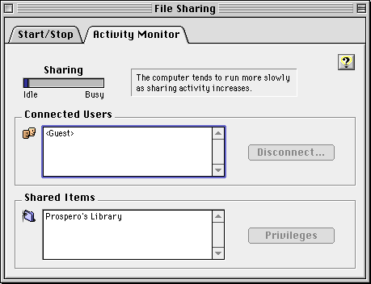
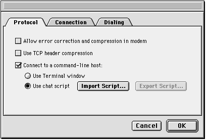
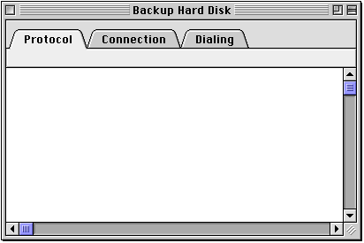

Tab Controls
The tab control provides a convenient way to present information in a multi-page format. This control is distinguished by the visual appearance of folder tabs. The user selects the desired page by clicking the appropriate tab, which highlights and displays its page.The tab control supports one row of tabs running along the top, as shown in Figure 2-30 and Figure 2-31. You specify the names and icons that label the tabs. Figure 2-30 shows the tab control with 12-point font labels.
Figure 2-30 Tab control with 12-point font labels

Figure 2-31 shows a tab control with 10-point font labels.
Figure 2-31 Tab control with 10-point font labels

The appearance of the content area of a tab control (also known as a pane) depends on where it is used. Figure 2-32 shows a tab control inside a control panel. In this implementation, the sides of the pane appear to be "tucked" under the edge of the content region by one pixel.
Figure 2-32 Tab control with sides tucked under edge of content region

Figure 2-33 shows a tab control used in a modal dialog box. Note that the left and right sides of the pane are inset two pixels from the edge of the dialog box's content region. This small distinction helps emphasize the fact that the tab is part of a dialog box. Contrast this with Figure 2-34, which shows a tab control with tucked edges and a scrollable content area.
Figure 2-33 Tab control used in a modal dialog box

Figure 2-34 Tab control with tucked edges and a scrollable content area

Controls such as push buttons or scroll bars may be used within a tab control. These controls may be global, which means they are available to and affect the settings of all the panes in a set of tabs. Controls may also be embedded within an individual pane, in which case they affect only the settings displayed in that pane. It is important that you make this distinction unambiguous to the user through clear, specific labeling and placement. In Figure 2-33, for example, the push buttons underneath the tab control are clearly global, while the checkboxes inside the tab control affect only the active pane.